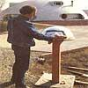

The heat loss of any structure can be described by the relationship of these five factors; surface area, insulation, storage, leakage and the difference between inside and outside temperatures. Lloyd Turner developed a paraboloid/ellipsoid structure and built the walls from insulation material.